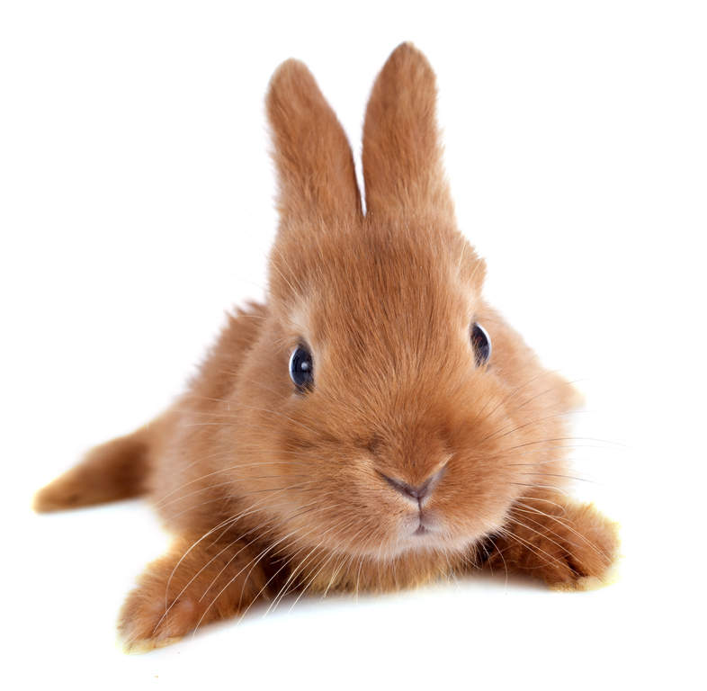

Походження
Схрещенні в Англії
Особистість
Даний вид кроликів був отриманий завдяки змішуванню таких порід, як Каліфорнійська і Новозеландська. Ця порода є однією з найкращих м’ясних. Бургундський кролик має красиву і привабливу зовнішність. У нього оригінальна багата забарвлення хутра – світло-коричнева з жовтуватим відтінком. Шерсть досить щільна, коротка і жорстка на дотик.
Кроленята підростають досить швидко, а самка робить на світло по 8-12 малюків. Цей рудий кролик досягає 4-4,5 кг, а іноді його вага доходить і до 5 кг. У віці 4-5 місяців він вже має масу дорослої тварини.
Здоров'я
Кролики цього виду живуть приблизно 10 років.
Грумінг
Термін їх життя залежить від того, як за ними доглядають, чи дають всі групи вітамінів і наскільки правильно підібрано харчування. Рижики відрізняються від інших порід дуже потужним будовою скелета і подовженим тілом. Довгастий корпус і така ж форма головки - головні відмінні риси Бургундської породи. Вушка середньої довжини за формою нагадують величезні ложки. Шия дуже коротка, а груди, навпаки, широка і горда.